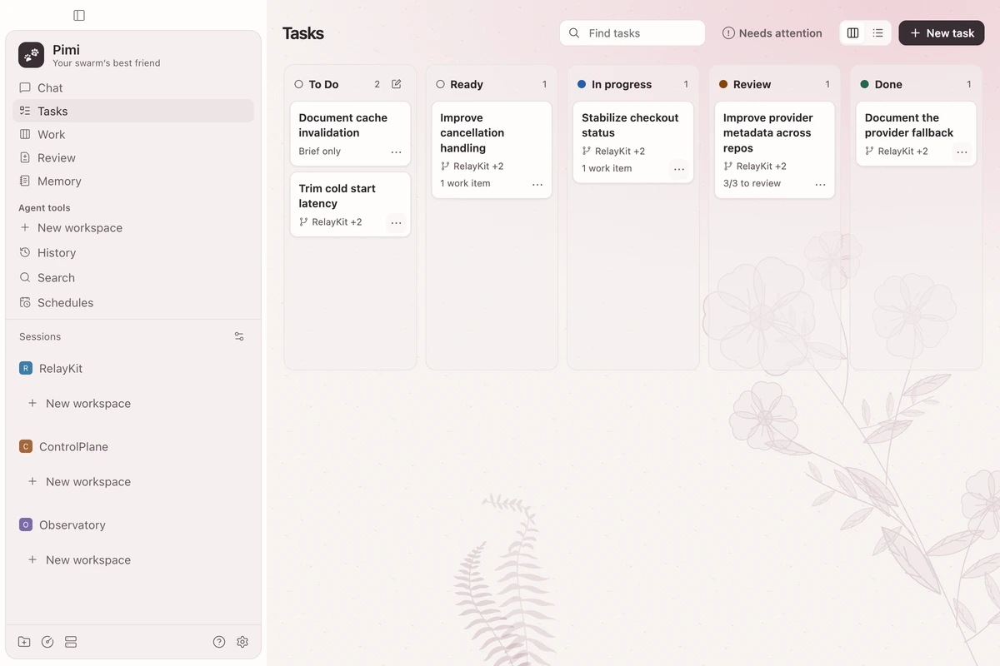
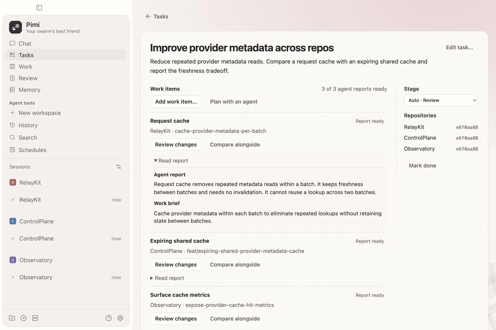
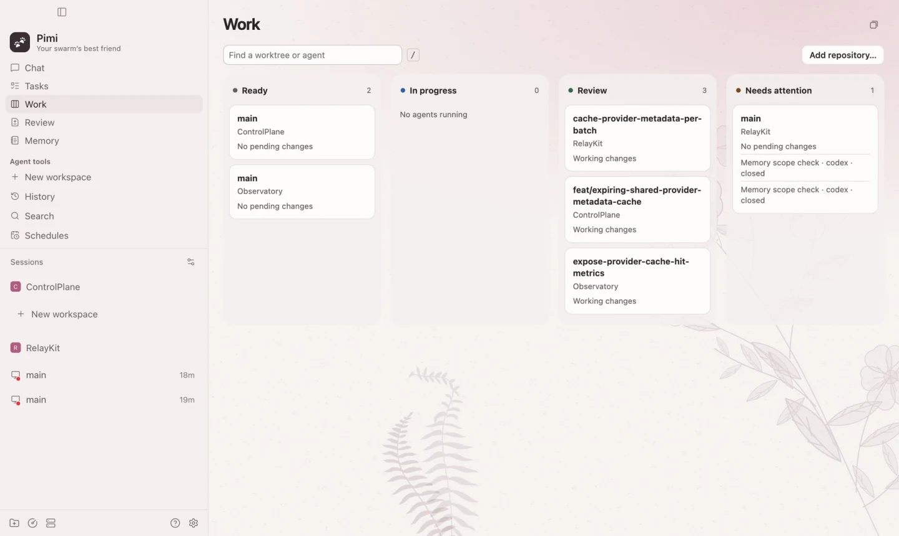
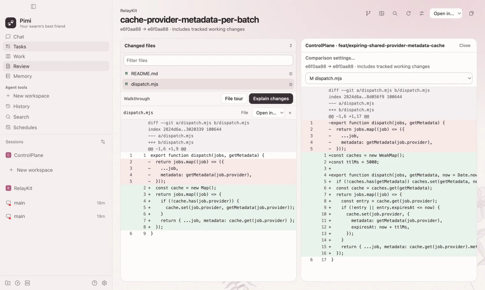
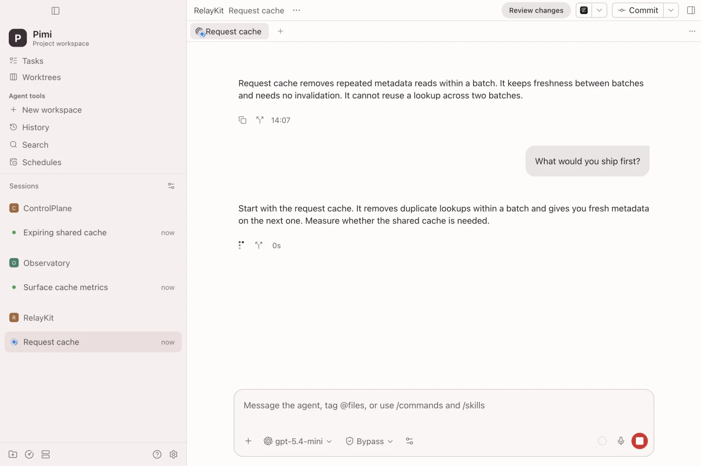
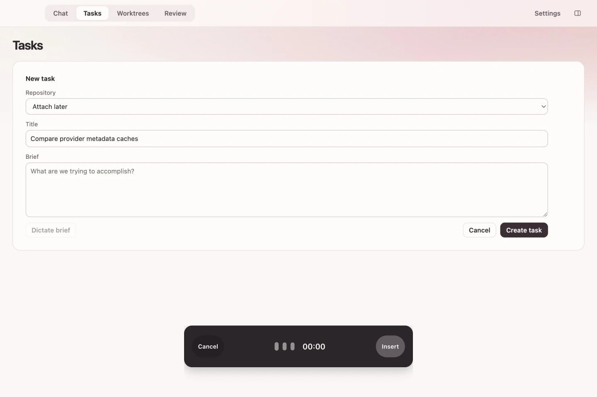
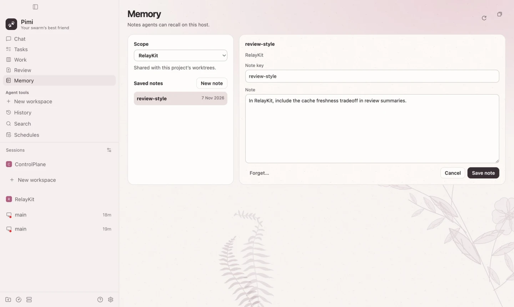
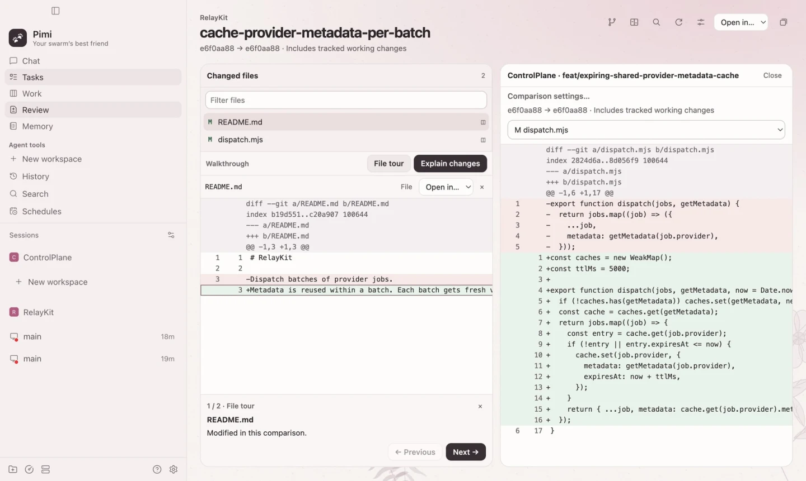
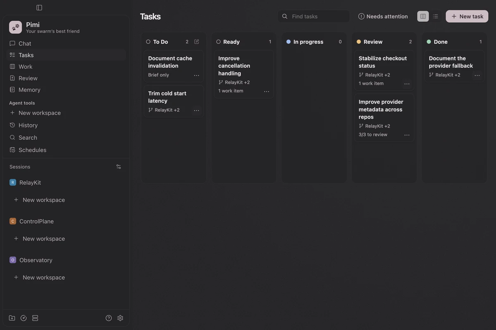
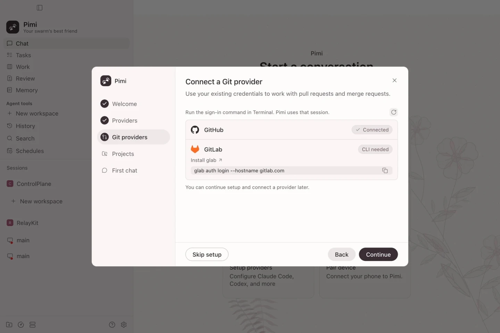

Pimi
Pimi
Your swarm’s best friend.
Parallel agents. One place to follow the work.










Apple silicon · macOS 13+ / Windows x64 Installation details
macOS. Drag Pimi into Applications. The preview is ad-hoc signed and isn’t notarized by Apple.
First-launch helpmacOS checksum
Windows. Run the x64 installer. The preview installer is unsigned.